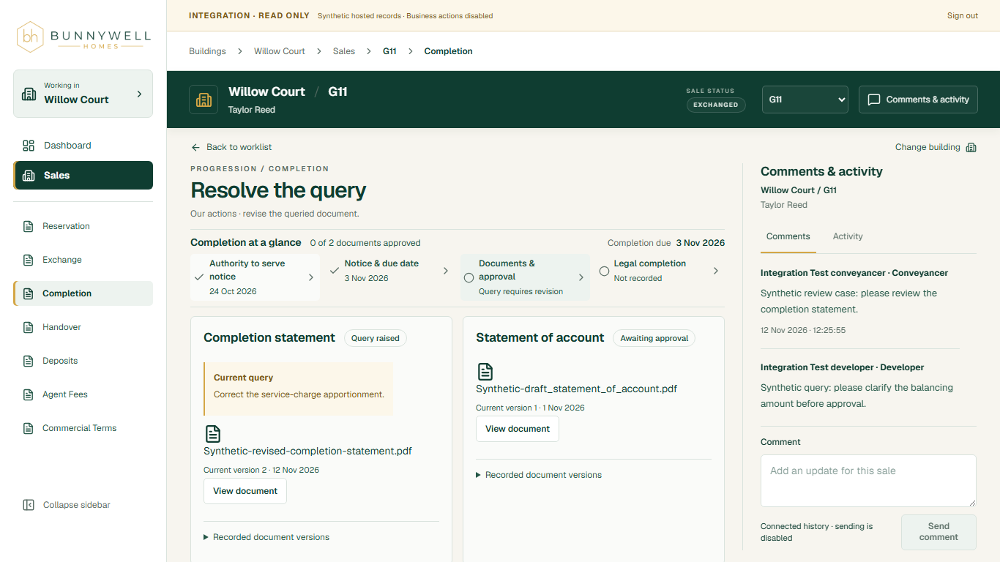
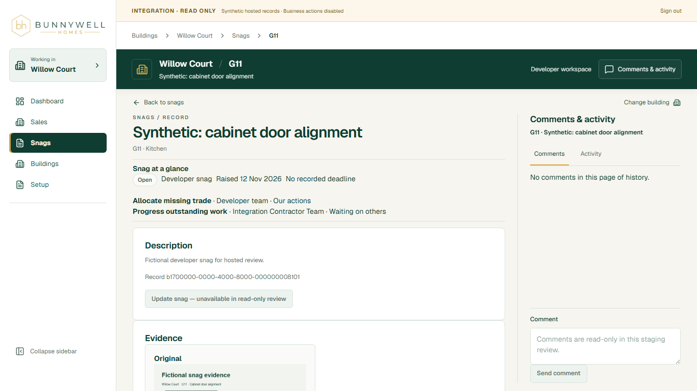

12 November 2026. The accepted building-first interface is published against a separate hosted database containing fictional records. Legacy staging, production and the accepted design prototype are preserved.
Open the hosted workspace. First pass Vercel authentication with your existing Vercel account, then use a new integration test account. The private local access sheet is tmp/hosted-integration/REVIEW-ACCESS.txt in the integration worktree. Staging credentials do not apply.
Branch codex/wider-workspace-integration; deployed application commit 2117f8a161682552c4350e5bd475f3bbf7407b70; route /workspace; Vercel deployment dpl_C1af8nn7ba6LeVs2C5phacnodKTD; Supabase mmwzhzziqvjbsphrkbqr. The branch remains local: no Git push or merge. The application was uploaded directly to the new Vercel project. Later local commits record configuration and evidence without changing the deployed UI.
| Area | Connected in this release |
|---|---|
| Building selection, Dashboard, Sales | Authenticated building scope, canonical action/responsibility/count calculations, paged worklist and exact-sale reads. |
| Full-page Completion | Sale identity, checkpoints, dates, queried/current and previous document metadata, private PDFs, persisted comments and activity. Permanent discussion column and accepted responsive layout retained. |
| Snags | Building register, individual records, areas, public synthetic evidence and recorded activity. No real resident photographs copied. |
| Buildings and Setup | Read-only structure, floors, areas, team/defaults, people/access, organisations, trades, unit types and audit views under existing permissions. |
| Unavailable | Uploads, approvals, queries, comment sending, payments, edits, invitations and all other business writes. Other detailed sale destinations remain read-only summaries or explicitly not-yet-connected views. Supporting notice metadata is connected; its dedicated viewing workflow remains unavailable. No external delivery. |
The reviewed baseline was installed transactionally in the new empty database: 61 application tables and four buckets. The hosted review now has 7 fictional buildings, 54 units, 38 sale attempts, 3 snags, 10 test accounts and 5 stored synthetic files. Two spreadsheet-import rehearsal pairs demonstrate historical statuses and recovery. Duplicate G11, LG11 and 301 records remain distinct between Willow Court and Orchard House.
Fresh confirmed test accounts use the new project only. Signup is disabled; email/SMS hooks reject delivery. A real password-reset request returned 403. No service-role or delivery credentials are deployed. The application server allows only reviewed reads to the exact new Supabase origin, revalidates access, and blocks legacy/write/cron routes. Canonical database role permissions remain intact; the read-only guarantee applies to this published interface. Public snag-image reading is retained deliberately. Completion PDFs use an explicit active-profile, sale-access, visibility and redaction policy. Sensitive handover uploads remain disabled.
Initial browser failures were traced to incomplete synthetic pagination terms and verification-harness selectors/protection headers; the final reruns passed. No design or permission relaxation was needed.
Three runs per role/screen at 1366×768; authenticated navigation. Median time to usable content below. Requests and wire response-body sizes count browser-visible /workspace/read calls, not internal SQL/PostgREST calls or static assets/auth traffic. These are observed hosted measurements, not a before/after latency claim. Browser routing for temporary Vercel authorization was active.
| Role | Screen | Median usable | Data requests | Response bodies |
|---|---|---|---|---|
| developer | dashboard | 1086 ms | 3 | 2836–3109 B |
| developer | worklist | 1130 ms | 3 | 2780–3123 B |
| developer | Completion | 1553 ms | 5 | 3459–3478 B |
| conveyancer | dashboard | 1070 ms | 3 | 2148–2452 B |
| conveyancer | worklist | 1123 ms | 3 | 2421–2481 B |
| conveyancer | Completion | 1587 ms | 5 | 3183–3212 B |
Legacy aliases were rechecked unchanged: staging dpl_2FgewspkDgVzWMf7vdaNv8UcW18w, production dpl_63zzZzc3KFqbZjcmyCa6Jm8AfS5W. The accepted prototype is clean at 1df4bac80588491bc3fba47966c9854fb33b4c10, branch experiment/sales-workspace-redesign, route /dev/sales-workspace. The existing local Completion environment was not changed.
Vercel protection remains enabled. Temporary browser automation access was revoked and verified rejected afterward. The connector-created verification share expires automatically; it was not published. Stop here for UI/workflow review before enabling additional writes or remaining integrations.
Complete machine-readable results and scripts are under artifacts/hosted-integration and scripts/hosted-integration. No credentials are committed.

Hosted Completion, 1366×768, conveyancer session.
